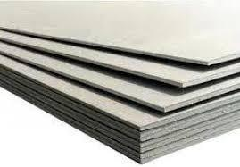
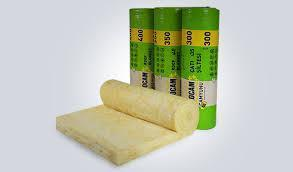
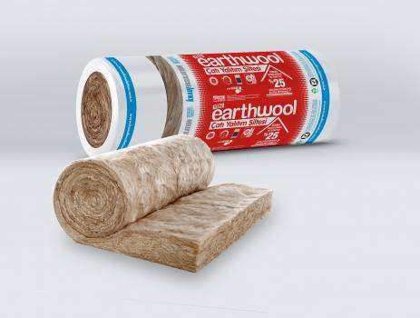

Karkas / Konstrüksiyon
Özel tasarım galvanizli hafif çelik profillerden oluşmaktadır. Prefabrike binalarımızın kat arası çelik konstrüksiyonu da çatı makasları gibi rollform hatlarda şekillendirilen galvanizli hafif çelik profillerden oluşmaktadır ve kaynak kullanılmadan imalat ve montajı yapılmaktadır.
Kat Arası Üst Kaplama Malzemesi
{{EGER:Kat Arası Üst Kaplaması=Yok:Hariçtir.}}
{{EGER:Kat Arası Üst Kaplaması=16 mm Betopan:16 mm Betopan / Fiber Cement}}
{{EGER:Kat Arası Üst Kaplaması=Trapez Sac:0,5 mm 27/200 formunda Naturel Trapez Sac}}


Yalıtım Malzemesi
İzocam, Knauf ve muadili
{{EGER:Kat Arası İzolasyonu=Yok:Hariçtir.}}
{{EGER:Kat Arası İzolasyonu=Camyünü 80 mm:80 mm kalınlığında şilte Camyünü (12 kg/m³)}}
{{EGER:Kat Arası İzolasyonu=Mineralyün 80 mm:80 mm kalınlığında şilte Mineralyün (12 kg/m³)}}
{{EGER:Kat Arası İzolasyonu=Camyünü 80 + 80 mm:80 + 80 mm kalınlığında şilte Camyünü (12 kg/m³)}}
{{EGER:Kat Arası İzolasyonu=Mineralyün 80 + 80 mm:80 + 80 mm kalınlığında şilte Mineralyün (12 kg/m³)}}


Kat Arası Özel Durum Açıklaması
{{Kat Arası Özel Durum Açıklaması}}
Kat Arası Detayı